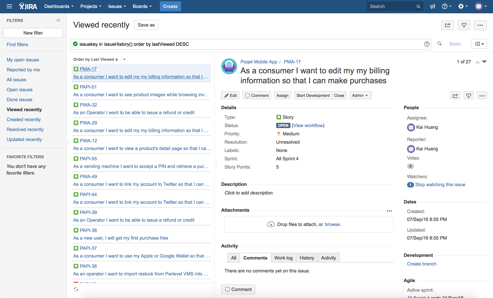
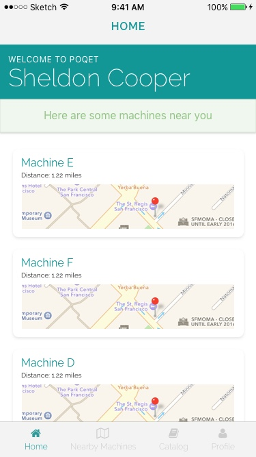
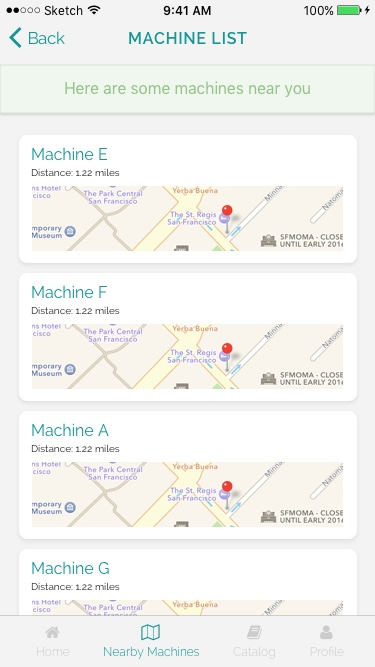
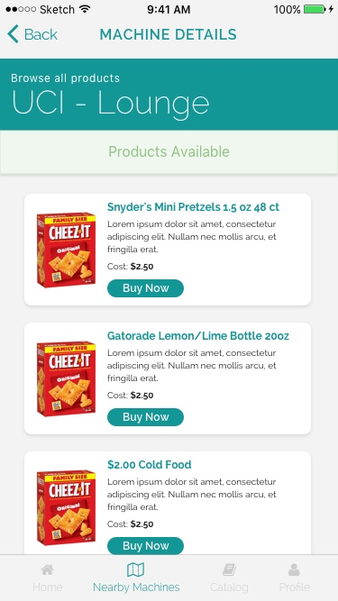
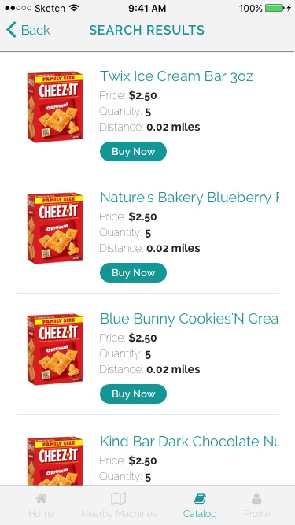
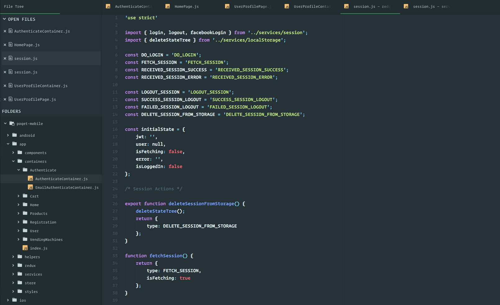
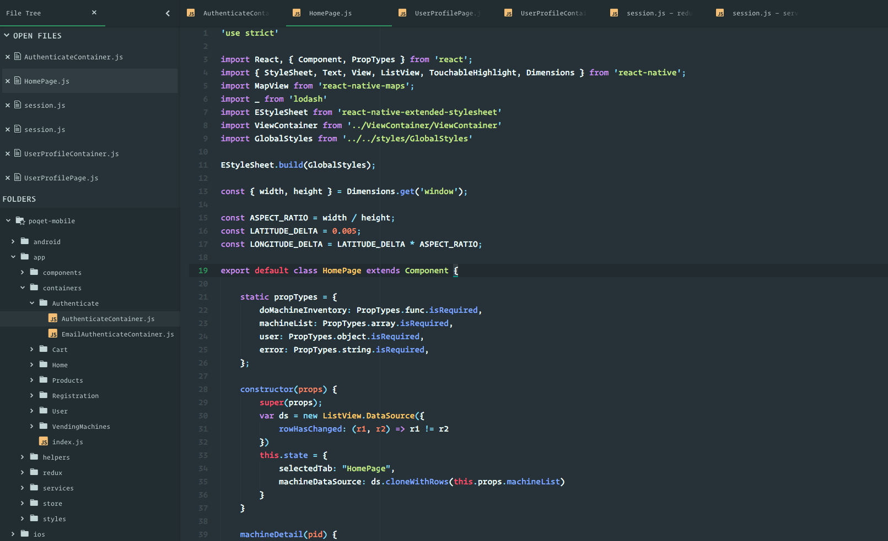

Poqet Mobile App
Poqet is an innovative way for customers to purchase items from a vending machine. Users will be able to look for products that are Poqet-connecte within their area, reserve their products directly from their phone, then go pick them up using a PIN or QR code. The entire platform required a web app, backend platform, and a mobile app platform. I co-founded the company to provide an original retail experience for users.
The service is set to launch mid-2017.
Technologies used: React Native (iOS and Android app), React (web app), and noSQL (DB management).
All screenshots shown here are mockups that are currently in various stages of production. Final results may change as new features are added and will be updated accordingly on this page.
My Role
I assumed the role of Chief Product Officer and am responsible for product development, specifically with the mobile app but coordinating with all the other platforms.
My work consisted of UX Research, Project Management, Mobile UI Design, and Mobile Development.
UX Research
I worked with my Co-Founder to conduct deep UX Research to figure out what feature development we need to implement for MVP (Minimum Viable Product). This consisted of user stories and figuring out how the user will interact with the system. By figuring out multiple user profiles, we were able to determine that the most important feature for the user is frictionless purchasing and vending. Thus, we focused our efforts for building the web app and mobile app to provide this.
Project Management
As the Chief Product Officer, one of my responsibilities includes making sure the project is on track and progressing smoothly. In order to ensure this, we set up multiple meetings to figure out our sprints and plan feature development. We used Jira for our project management tool, with Slack and BitBucket integration. We set up stories for each task to make sure we covered potential feature.
Mobile UI Design
Poqet's mobile app design was built in Sketch. After our UX Research, we wanted to make sure the design gave users an efficient way to search for nearby locations, check inventory, then make their purchase. The secondary functionality included getting product information, and social features.
Location Searching: We used geolocation features from native iOS and Android to determine the user's location on launch. Then the home page automatically displayed the closest machines available for the user. We also allow the user to enter a custom location to search for machines.
 Product Purchasing: This piece of functionality was the most important part for our user. We wanted it to be as easy as possible for the user to make the purchase after selecting the machine and product. Once the user makes the purchase, they'll receive a PIN number that they will enter at the vending machine to retrieve their product.
 Social Features We wanted to include social features for our users to allow them a different aspect to their retail experience. The user will be able to share their purchases with friends, gift products, and rate products.

Mobile Development
I took lead on the mobile development for both iOS and Android platforms. Because our web app is built in React, I decided to use React Native as the framework for development. This allowed me to develop for both platforms simultaneously while retaining the speed and functionality afforded by native platforms. The initial build for our mobile app took about 4 months, and work is still ongoing for polish. The main things I was looking for in the framework was:
- Performance (as close to native as possible)
- Scalability
- Integration with database
React Native fit all these criteria and helped us build our app much quicker and more efficient than we could've otherwise using native mobile development methods.
We ran into a couple issues with state management in the app. Specifically, we needed to maintain multiple states as the user makes purchases, adds products to cart, writes reviews, etc. We decided to utilize Redux, a state management method, in order to maintain a concise app state. This allowed our app to run efficiently and pass only needed data back and forth between views.
 Ongoing Work
The service is still in development, and we have many features on the way that will expand upon previous functionality. This includes everything from custom machine circuit board design to proximity sensing to allow users to retrieve items without taking out their phones. The exciting part of building an innovative platform is the endless possibilities of what can be implemented.
The platform is set to launch later this year. This site will be updated with any new information.